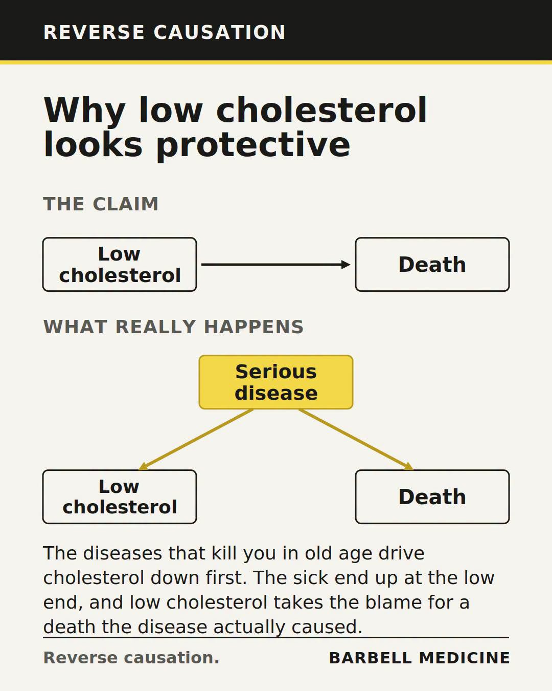

Several claims circulate widely on social media: that people with low cholesterol die sooner, that the body needs high blood cholesterol for hormones and the brain, and that LDL ("bad") cholesterol is a harmless bystander in heart disease. The group's admins, Louis Nervegna and Gokhan Can, have returned to these claims again and again, and the posts converge on one answer. Each myth starts from something real (a true statistical association, or a true fact about biology) and then draws a conclusion that the evidence does not support.12
This summary goes through the myths one at a time. The short version is that low measured cholesterol in sick people is mostly a consequence of disease; that the cholesterol your cells need is largely made inside the cells, not delivered from the blood; and that when LDL is lowered by genes, by drugs or by diet, cardiovascular risk falls roughly in proportion. The summary also covers where the group itself urges nuance, because "LDL matters" does not mean "lower is always better for everyone".
Some terms first. LDL-C is the cholesterol carried inside low-density lipoprotein particles, as measured on a standard blood test. ApoB (apolipoprotein B) is a protein found on each LDL-type particle, so it counts the particles rather than the cholesterol inside them. Reverse causation means the apparent "cause" is actually a result of the outcome. Mendelian randomization uses naturally occurring gene variants, fixed at conception, as a natural lifelong experiment.
Myth 1: "People with low cholesterol die more, so high cholesterol is healthy"
What the claim gets right
Observational studies do show that lower measured cholesterol is associated with higher mortality in older and sicker populations. A post quoting Barbell Medicine concedes that associations such as higher cholesterol going with less cognitive decline, fewer infections and less cancer are real, but calls the conclusion drawn from them wrong.1
Why the conclusion fails: reverse causation
The explanation the group returns to most is reverse causation. Diseases that kill people in old age, such as cancer, organ failure and slow chronic illness, drive cholesterol down in the months and years before death. If you measure a room of older people once, the ones at the low end are disproportionately already sick, so the low-cholesterol group dies sooner even though cholesterol played no part.1

Louis points out that the Wikipedia article on "correlation does not imply causation" uses exactly this case as its example: some diseases, such as cancer, lower cholesterol (through weight loss and other factors) and also raise mortality.10 Gokhan makes the same point, calling the link between low LDL-C and mortality a marker of illnesses such as cancer or liver disease rather than a cause.11
The timing test: genes and trials
The decisive evidence is about timing. Some people are born with gene variants that keep LDL low for life, set at conception, long before any diet or illness could influence it. According to the post Louis quoted, these people get less heart disease, have normal cancer risk and live just as long as everyone else. The fact that people with measured low cholesterol show more cancer, while those with genetically low cholesterol do not, tells you that cancer is lowering the cholesterol.1
For cancer specifically, Louis quotes a Circulation review on reverse causality (2017). It reports that serial trial data show cholesterol declining faster before a cancer diagnosis than in people who stay cancer-free, that statin randomized trials show no increase in cancer, and that Mendelian randomization studies, with an average of 52 years of lifetime exposure, show no higher cancer rates in people with lower cholesterol.5
Another shared post rebuts the claim that LDL research is flawed: over 200 prospective cohort, genetic and randomized studies with over 2 million participants, 20 million person-years and 150,000+ cardiovascular events show a dose-dependent relationship between LDL-C and atherosclerotic cardiovascular disease. It adds that illnesses such as cancer, infections and some liver diseases can lower LDL, so low LDL can be a consequence of illness.7
U-shaped curves are common and misleading
Louis stresses that U-shaped mortality curves, where both low and high values look worse, appear for many measurements, not just cholesterol: BMI, A1C and blood pressure too. Few people believe the optimal BMI is 28, the optimal A1C is 6 to 8.5, or the optimal systolic blood pressure is 140 to 150, even though observational charts can suggest it. The consensus explanation, he says, is reverse causality: cancer lowers LDL and BMI, liver or kidney disease lowers A1C, uncontrolled diabetes lowers blood pressure.12 The group repeatedly points members to Nutrition Made Simple videos on this topic, and Louis's summary is that "lowering LDL does not increase mortality".131415
What happens when LDL is actually lowered
Genetics point the other way. A Mendelian randomization study cited in the group estimates that each standard deviation of lifelong lower LDL-C adds about 1.2 years of expected lifespan, proportionally more for larger reductions.16 A separate Mendelian randomization study of 46 modifiable risk factors found that genetically higher LDL and total cholesterol were among nine factors associated with lower odds of reaching age 90 or 99, while higher HDL was associated with greater odds.17
Myth 2: "The body needs cholesterol for hormones and the brain, so keep blood levels high"
The first half is true: cholesterol is essential for life, as a building block of cell membranes and hormones.18 The second half does not follow.
Louis highlights several points from a physiology breakdown by Peter Megdal, PhD:
- The body holds about 120-150 g of cholesterol, but only about 3-7 g (roughly 2-5%) is in the blood. The rest sits inside cells, mostly in cell membranes.34
- Most cells make almost all the cholesterol they need internally. Nearly every cell with a nucleus does this, via the mevalonate pathway in which HMG-CoA reductase is the rate-limiting enzyme.419
- The brain holds about 25% of the body's cholesterol, and none of it comes from the bloodstream, because LDL cannot cross the blood-brain barrier.34
- The net daily demand on blood cholesterol from the adrenal glands and gonads (for steroid hormones) is only tens of milligrams a day, which is easily met even at very low LDL-C.34
- One model cited suggests the body needs only about 50-90 mg/dL of total blood cholesterol to keep its transport system functioning, against a US average near 200.3
Louis also describes most of the cholesterol on a blood test as "along for the ride" as a structural component of the lipoprotein particles, rather than being actively delivered to tissues.3
These claims have been tested in trials. According to Louis's summary, FOURIER (evolocumab) and ODYSSEY OUTCOMES (alirocumab) lowered LDL-C to extremely low concentrations (below 15-20 mg/dL) without impairing adrenal steroid production, gonadal hormone production or vitamin D levels.4 A 2025 review that Gokhan summarized likewise concludes that concerns about hormone disruption are unsupported by large-scale data.6
A nine-minute Nutrition Made Simple video the group shared tackles these myths together.2 As one post puts it, the problem is not cholesterol itself but having too many ApoB-containing particles in the bloodstream; at high levels they get trapped in artery walls and drive plaque.18
Myth 3: "LDL is only a marker, and the research is flawed"
The evidence for causation
The group presents the case for LDL as causal as coming from several independent directions that agree.
- History. Louis shared a slide from Tom Dayspring on Nikolai Anitschkov's 1913 experiment, in which feeding pure cholesterol (not meat or protein-linked cholesterol, per Dayspring) produced foam cells and plaque. Louis notes this is historical context rather than trial data.20
- Genetics. A chart from a European Atherosclerosis Society consensus statement shows that variants that affect LDL through different pathways (LDLR, PCSK9, APOB, HMGCR, NPC1L1, SORT1, ABCG5/8) change coronary risk in proportion to the LDL change, the same linear relationship seen in statin trials.8 Lifetime relative risk reductions on that chart range from about 5% to 90%. Louis converts one of them into absolute terms: with an average lifetime heart attack risk of about 20%, a 90% reduction from a PCSK9 variant leaves about 2%.8
- A log-linear pattern. A quoted post argues the relationship is log-linear and consistent whatever the mechanism, with roughly 50-55% lower cardiovascular risk per 1 mmol/L of lifelong LDL reduction across genetics, statins, PCSK9 inhibitors and ezetimibe.21 Another analysis puts a lifelong genetic reduction of about 39 mg/dL at roughly 55% lower coronary heart disease risk, about three times the per-unit benefit seen in statin trials started in middle age. It also cites PCSK9 loss-of-function carriers with 15-28% lower LDL and 47-88% lower CHD risk.22
- Drugs and diet. Gokhan's long article notes that the FDA has approved about 16 LDL-lowering drugs, that nearly every method of lowering LDL reduces cardiovascular events, and that diet changes such as cutting saturated fat also lower LDL.23
- Review-level support. A 2026 NEJM review on the inherited basis of coronary artery disease, as shared by Louis, says LDL and ApoB are causal risk factors, supported by human genetics, Mendelian randomization and randomized trials.9 A 2024 Mendelian randomization study (Martin et al.) summarized by Gokhan found that genetically higher ApoB shortened healthspan, with an effect independent of LDL.24
Exposure over time
The "plaque-years" idea explains why the same LDL number can mean different things at different ages. The group's posts describe risk as depending on both how high LDL is and for how long.
- Gokhan estimates that a 70 mg/dL lowering sustained for 30 years gives about 60% lifetime risk reduction (a figure he read from a chart), and notes that effects beyond roughly 80 mg/dL of lowering are not well known.25
- A meta-analysis cited by Gokhan found the relative reduction in major vascular events per mmol/L lowered grows with treatment duration: 12% at year 1, 20% at year 3, 23% at year 5 and 29% at year 7.16
- In a cross-sectional study of more than 8,000 people not on lipid drugs, endothelial dysfunction appeared above about 4,000 mg-years/dL of cumulative exposure (age x LDL-C), smooth muscle dysfunction above 5,000, and carotid wall thickening and plaque from 6,000.26
- In the Framingham Offspring cohort, 11-20 years of hyperlipidemia by age 55 meant a 16.5% future CHD risk, versus 4.4% for those with none.22
- A 2020 Circulation modeling study found that starting lipid lowering at 40-49 could cut projected 30-year risk from 17% to 6-12%, whereas waiting 10-20 years left 13-15%. It did not quantify the harms of statin-related diabetes risk.27

Gokhan's takeaway, shared in several posts, is "lower LDL-C, earlier, longer".2528
The "speed" analogy
Louis uses a driving analogy. Drivers at 50 mph crash less often than drivers at 100 mph, yet many 50 mph drivers still crash. That does not make speed non-causal; lowering it simply lowers risk and does not give blanket protection, and other factors must also be addressed. LDL works the same way.29
Myth 4: "Very low LDL is dangerous"
This is where the posts show the most nuance, and where they partly disagree.
The reassuring evidence. A 2025 review summarized by Gokhan argues the benefits of aggressive LDL lowering outweigh mostly theoretical risks. It reports that PCSK9 inhibitors add a 59-62% LDL-C reduction on top of statins, FOURIER showed 15% fewer primary endpoints at a median LDL-C of 30 mg/dL, and a major meta-analysis found a 21% relative risk reduction per 38.7 mg/dL (1 mmol/L) with benefit down to 21 mg/dL. It cites a hemorrhagic stroke number needed to harm of 3,333 and says the EBBINGHAUS study refuted cognitive concerns. It adds that fewer than one in four high-risk patients reach under 55 mg/dL.6
In FOURIER and its extension, among more than 5,200 people with prior ischemic stroke, those with LDL-C below 40 mg/dL versus 70 or higher had about 31% fewer major cardiovascular events and 27% fewer recurrent strokes, with no increase in hemorrhagic stroke even below 20 mg/dL.30 After an acute coronary syndrome, a European Heart Journal viewpoint Gokhan shared concludes that benefit continues down to around 30 mg/dL.31
The cautionary view. Louis argues that forcing LDL-C below 20 in low-risk people with multiple drugs is unwise. He quotes Harvard's Walter Willett saying very low LDL appears to raise the risk of hemorrhagic stroke, citing Japanese experience and Mendelian randomization of the gene regulated by statins. Louis stresses that this does not apply to high-risk people, for whom the benefit on heart attack and ischemic stroke outweighs the possible hemorrhagic stroke risk, and that "your LDL target should scale with your level of risk".32
The two views are reconciled by risk-scaling rather than by one side winning. The NEJM review shared by Louis calls the clinical message "proportionality, not lower for everyone": focus on absolute risk, identify who gains meaningfully from drugs, and avoid unnecessary treatment in truly low-risk people with tailored lifestyle changes instead.9
The group's guideline posts show how targets scale. A 2023 JAHA review gives at least 50% reduction and below 70 mg/dL for high risk, and below 55 mg/dL (or below 40 mg/dL after recurrent events on statins) for very high risk.33 The ESC/EAS summary posted by Louis lists below 55 mg/dL for very high risk, below 70 for high, below 100 for moderate and below 116 for low risk (consider).34
| Risk tier | ESC/EAS summary34 | 2023 JAHA review33 |
|---|---|---|
| Very high | Below 55 mg/dL | Below 55 mg/dL, or below 40 mg/dL after recurrent events on statins |
| High | Below 70 mg/dL | At least 50% reduction and below 70 mg/dL |
| Moderate | Below 100 mg/dL | Not covered in the post |
| Low | Below 116 mg/dL (consider) | Not covered in the post |
Other claims that travel with cholesterol denial
"LDL is necessary but not sufficient, so it can't be the cause"
Louis summarizes a Joel Kahn video: there are at least 25 major risk factors, all worth addressing, but LDL is special because it appears necessary for atherosclerosis, while it is not always sufficient, since some people with very high LDL never form plaque. No other risk factor has been shown to be necessary, which is why cardiologists focus on it.35 There is also a lesson in the other direction: Louis notes that a zero CAC score does not rule out blockages, since 54% of 23,759 symptomatic patients in the Western Denmark Heart Registry had CAC zero and soft plaque can precede calcification by years.36
"Particle size, HDL and ratios tell the real story"
Louis's fact-check of keto and carnivore influencers separates truth from error. ApoB is indeed the best lipid marker, and LDL-C usually tracks ApoB, though discordance happens. Particle size does not matter once particle number is counted. Most saturated fats raise LDL-P, ApoB and LDL-C, and studies finding saturated fat harmless used a standard Western diet as the comparison. HDL is a crude proxy for insulin resistance and metabolic syndrome rather than a direct protector, and he cites Keto-CTA, in which people with very high LDL on keto showed soft plaque progression 3.8x faster than comparison participants.37
On HDL, five large trials of HDL-raising drugs (AIM-HIGH, HPS2-THRIVE, dal-OUTCOMES, ILLUMINATE, ACCELERATE) failed to reduce events, and in one (ILLUMINATE) cardiovascular death increased. Louis adds that some HDL subfractions might still prove protective.38
ApoB is also relevant to a subtle point: in 13,015 statin users from the Copenhagen General Population Study, those with high ApoB but normal LDL-C had a 49% higher heart attack rate and 21% higher all-cause mortality, while high LDL-C with normal ApoB showed no excess risk.39 Louis shared an explainer video on ApoB and discordance.40

"Seed oils and 'sugar, not fat' are the real culprits"
The group links cholesterol denial to a wider ecosystem of nutrition claims. On seed oils, Louis cites a New York Times article reporting that higher omega-6 intake or blood levels are associated with lower risk of cardiovascular disease, type 2 diabetes, cancer and earlier death41, a 2019 pooled analysis of 30 prospective cohorts linking higher blood linoleic acid to lower heart disease and diabetes risk42, and his claim that dozens of randomized trials show omega-6 oils do not raise inflammation.43 Stanford's Christopher Gardner is quoted as saying seed oils are preferable to saturated fat44, and Harvard's Nutrition Source credits the PREDIMED trial with showing fewer major cardiovascular events (over 4.8 years) with a Mediterranean diet plus olive oil or nuts.45
Gokhan offers an account of why such claims feel convincing: people who improve on low-carbohydrate diets lose trust in guidelines, and nutrition epidemiology can be skewed by reverse causation and socioeconomic confounding, which only intervention trials resolve.46 This is an argument about the limits of observational diet studies, not about LDL itself, and it is one-sided.
What this means for you
The group's admins are not clinicians, and these points are discussion summaries rather than medical advice. They suggest the following to discuss with your own doctor.
- Treat the link between low cholesterol and mortality in observational data with suspicion, since illness lowers cholesterol.1012
- Do not rely on a single reading in isolation. Duration of exposure matters, and the group's admins favor lowering LDL early and sustaining it.2228
- Ask about ApoB as well as LDL-C if results seem discordant.3739
- Match LDL goals to your absolute risk, using guideline tiers as a reference point.93334
- If you are at high risk, Louis's "Rule #1" is to find a good cardiologist and listen to them, and, if you want to add natural or alternative approaches, to do so in addition to treatment rather than instead of it. He notes that social-media videos often cherry-pick one study out of a hundred.47
- Be careful with anecdotes. Louis points to a carnivore dieter who avoided medication, with a family history and high LDL-C, and developed heart disease.48
Frequently asked questions
If low LDL is safe, why do some very old people with low cholesterol die sooner?
Because illness lowers cholesterol before death, so low values in the elderly often mark disease already underway. People with lifelong genetically low LDL do not show shorter lives or more cancer.15
Do statins and LDL-lowering drugs cause diabetes?
Genetically low LDL and statins both raise type 2 diabetes risk a little, according to the post Louis quoted. That risk is concentrated in people already near the metabolic edge, such as those with impaired fasting glucose, a large waist or high triglycerides; those with none of these showed essentially no added diabetes in big trials.1
Can plaque be reversed or halted?
Gokhan's article argues that high-dose statins, alone or with ezetimibe or PCSK9 inhibitors, can slow and possibly halt plaque progression.23 He also describes one person, Charles Grashow, who regressed his CAC score with high-dose statin, ezetimibe, nattokinase and lifestyle. That is a single anecdote.25
Does a perfect metabolic profile mean LDL no longer matters?
Not according to the group. Louis commented on a publicly released health memo in which LDL was 53 mg/dL on rosuvastatin and ezetimibe despite fasting glucose 83, A1C 5.3% and TG/HDL of 104/70, and used it to illustrate that LDL treatment can be appropriate despite good metabolic markers.49
Does "LDL is causal" mean lower is always better for everyone?
No. Benefit has been shown down to very low levels in high-risk patients, but Louis and the NEJM review he shared argue the target should scale with absolute risk.6932